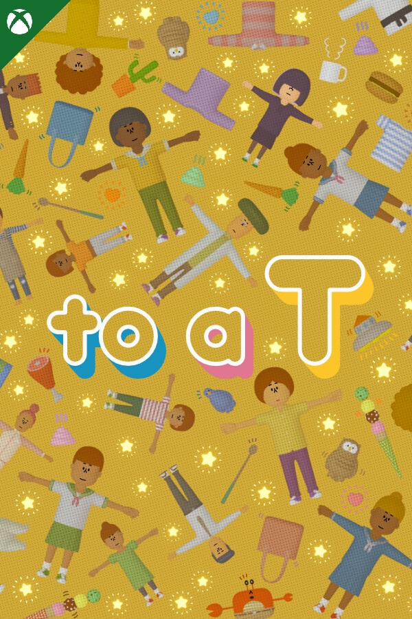

to a T
Every archived year-end list appearance, including placement and points earned.
About the Game
to a T is a narrative adventure game that portrays the extraordinary life of a 13-year-old teenager, whose body happens to be in the shape of the letter "T." They live in a modest seaside town that they explore by foot, train, or even their favorite unicycle, and interact with a the charming cast of characters who live there.From teenager’s loyal fluffy canine companion and their caring mother, to a gang of despicable bullies and a giraffe that makes the most scrumptious sandwiches. After a chance encounter, the teenager discovers a newfound ability, and a story begins to unravel around a mysterious object enveloped in light that falls from the sky. Features: ● Episodic Story: Take part in a story that unfolds over multiple days while Teen finds a way to fit in, and discovers a new found sense of self. ● Minigames: Control Teen in a variety of different scenarios that they encounter throughout their day. Maneuver Teen’s arm to reach for and interact with objects. Open Teen’s mouth to take a bite of food or a drink of water. From petting a dog, to eating breakfast, Teen can do a lot even if they have to do it in their own way. ● Explore town: Outside of the main story, collect coins, find a beautiful vista point, visit all the shops around town, or hunt for interesting characters around town to talk to in free mode. ● Character customization: Style Teen to your own liking. Purchase clothing from stores around town to expand your wardrobe and experiment with fun clothing combinations.● A very cute dog.
| Released | 2025-05-28 |
|---|---|
| Developer | uvula |
| Publisher | Annapurna Interactive |
| Genres | Adventure |
| Platforms | PC |
SingleplayerSteam AchievementsStory RichPartial Controller SupportExplorationControllerCharacter CustomizationFamily FriendlyCute3DColorfulFamily Sharing
Where to Buy
Game information provided by RAWG.
Points by Year
List History
| Year | Source | List | Placement | Points |
|---|---|---|---|---|
| 2025 | NPR | The best games of 2025, picked by NPR's staff | Unranked | 1 |
| 2025 | Slant Magazine | The Best Video Games of 2025 | 25 | 3 |